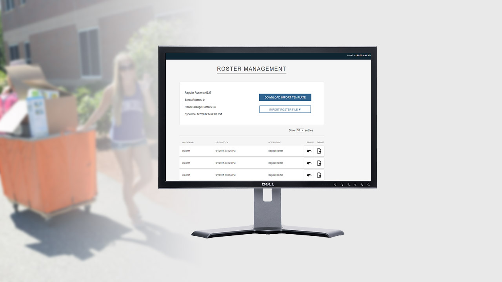
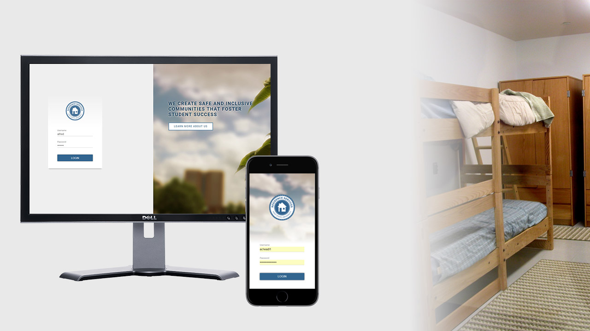
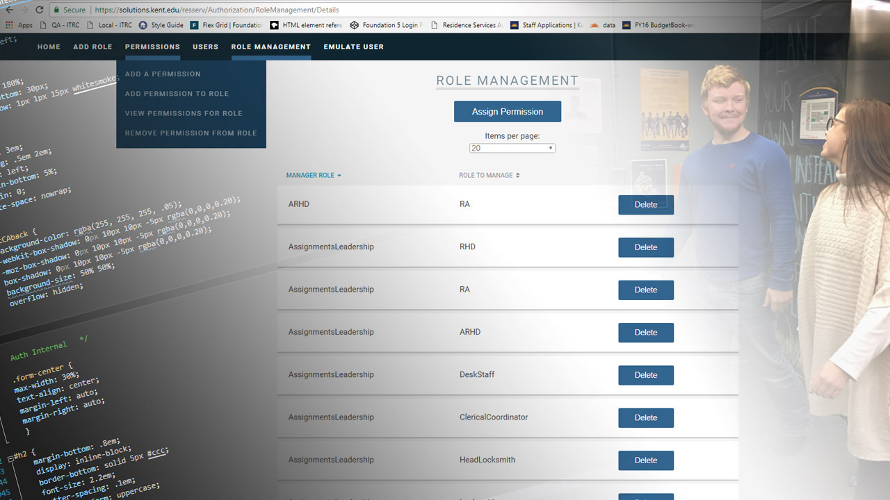
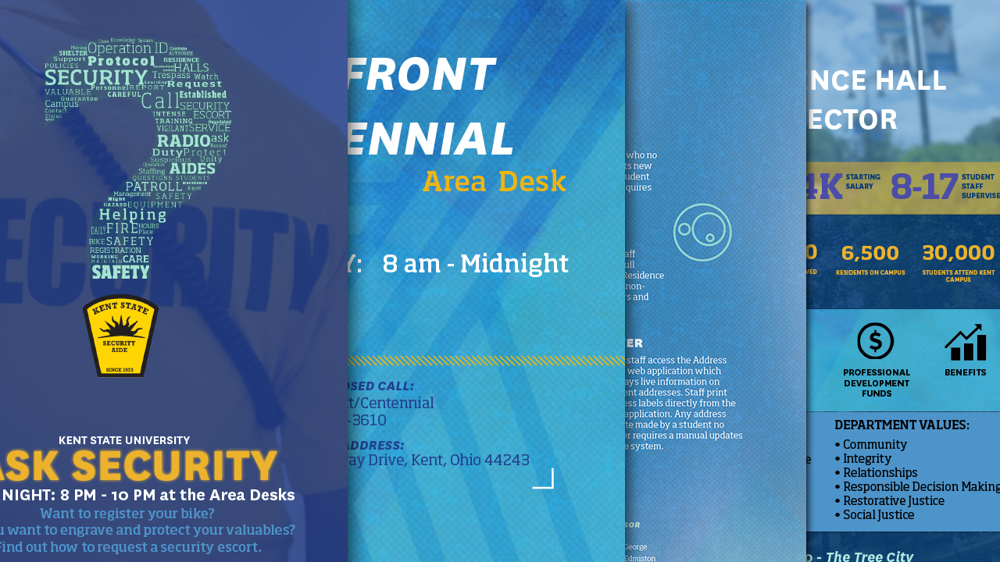
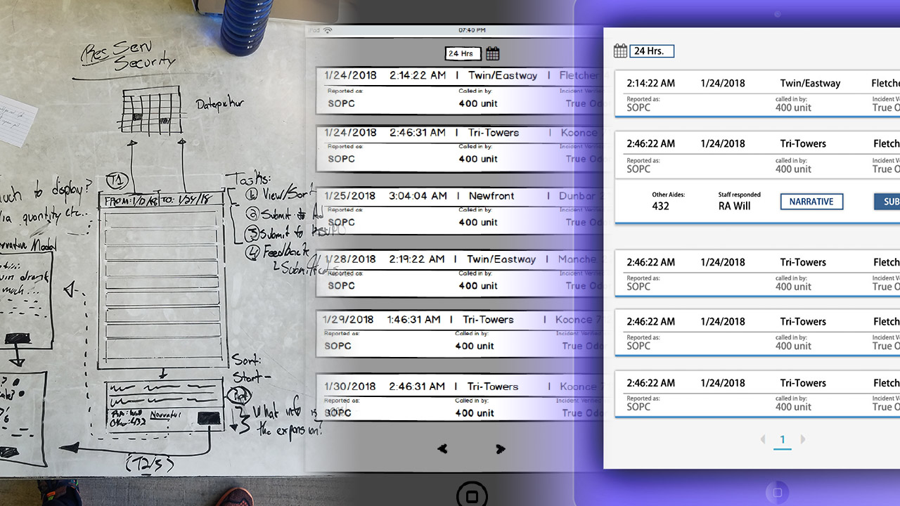

Prototyping
User Interface
User Experience
HTML/CSS
Responsive Design
JS
Graphic Design
Branding
Content Management
UX/UI - HTML CSS JS

UX/UI - HTML CSS
UI - CSS JS

Web content management

Graphic Design
UX/UI
